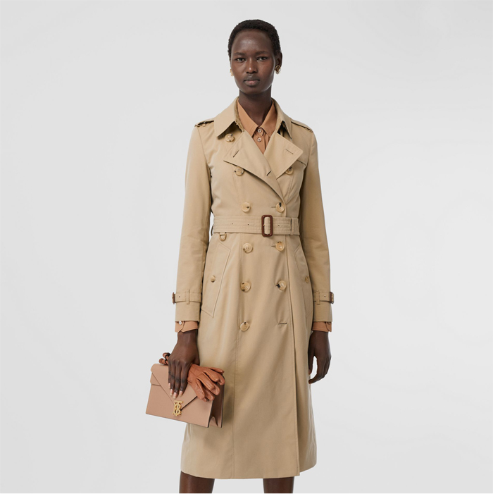
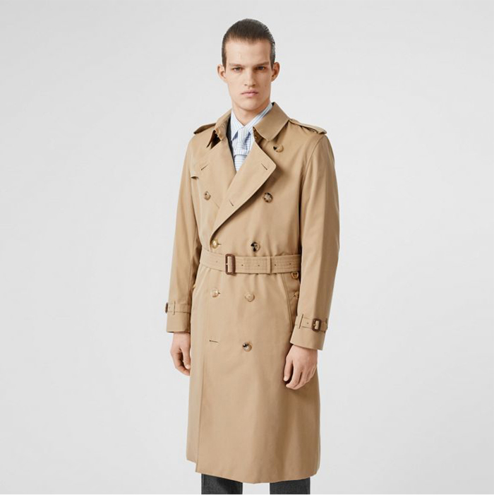
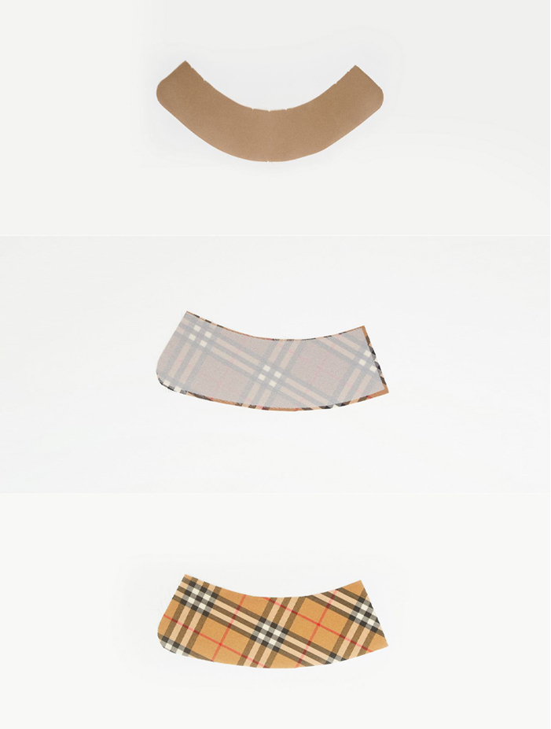
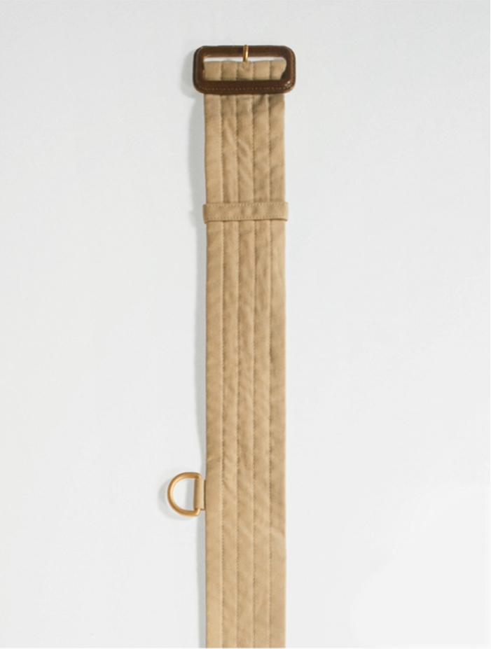
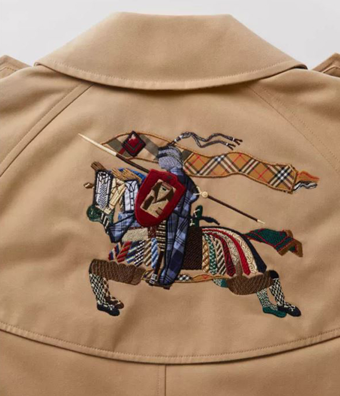
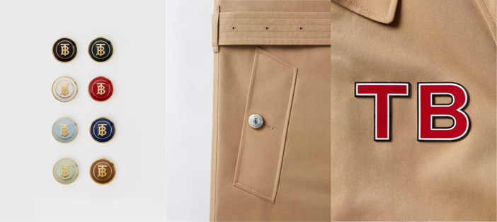

버버리 설립자인 토마스 버버리가 탄생시킨 브리티시 스타일의 정수, 글로벌 패션 아이콘. 100여 년 버버리 전통과 헤리티지 및 모던한 감각을 담은 디자인을 만나보세요.
- 
- 
- 아이코닉 디자인
- 1879년 토마스 버버리가 개발한 이후, 영국 요크셔 지방의 캐슬포드에서 지난 50여 년간
제작되고 있는 버버리 트렌치코트는 버버리 제품의 핵심 소재가 되어온 고급스럽고 아름다우면서도
실용적인 생활방수 면 소재인 개버딘으로 제작됩니다.
1912년에 특허를 획득한 타이로켄 코트에서 시작된 트렌치코트는 심플하면서도 품격있는 실루엣과 시간에 따라 진화하는 디자인을 선보이며 버버리 고유의 트렌치코트가 되었습니다.
-
디자인 디테일
가볍고 통기성이 좋은 혁신적인 소재인 개버딘이 사용됩니다. 이전의 전통적인 생활방수 소재는 원단을 왁싱 또는 고무 처리해 발수 효과를 냈기에 두껍고 뻣뻣하며 착용감이 불편했습니다.

트렌치코트의 디테일은 제 1차 세계 대전 당시 군복의 보호용 기능에서 비롯되었습니다. 아이코닉한 견장은 원래 장교의 계급을 표시하는 용도였으며 벨트의 금속 D링은 장비를 휴대하는 데 사용되었습니다. -

정교한 칼라의 완성
전문 재단사가 트렌치코트 구조의 가장 섬세한 부분인 옷깃의 봉제 기술을 배우는 데에는 1년 정도가 소요됩니다. 수작업으로 진행되는 180회 이상의 스티칭을 통해 코트의 목 부분을 완벽하게 감싸는 부드러운 곡선의 옷깃이 완성됩니다.
나만의 트렌치 코트 찾기
체형에 꼭 맞는 자연스럽고 멋스러운 실루엣의 가장 슬림한 핏부터 테일러링 아이템 위에 레이어링 하기에 이상적인 모던하고 편안한 릴랙스핏까지, 다양한 트렌치코트를 만나보세요.
- 
-
트렌치 비스포크
버버리 런던 플래그십 스토어에서 처음으로 선보이는 혁신적인 디지털 방식의 버버리 트렌치코트 퍼스널라이즈 서비스를 만나보세요. 버버리 아이코닉 실루엣에 모노그램 자수부터 빈티지 체크 안감까지, 원하는 모티프와 디테일을 담아 진정한 나만의 트렌치를 디자인할 수 있는 버버리 비스포크 서비스를 지금 매장에서 경험하세요.
